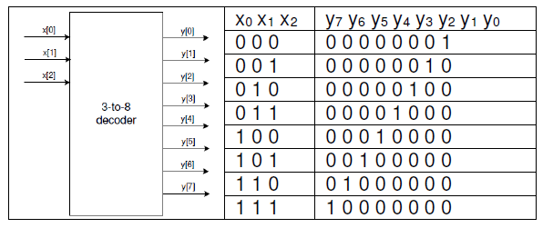
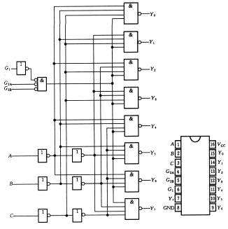
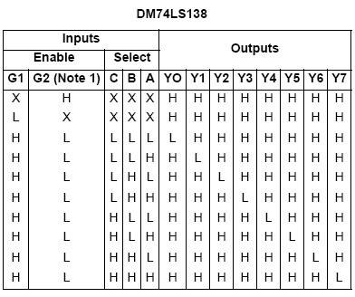
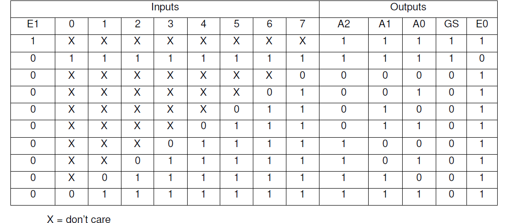

复杂组合逻辑电路
编码器，译码器和存储器介绍
布尔表达式可以用以输出多变量布尔函数值，像 assign 这样的数据流构造可以用来模拟这样的布尔函数。存在多输入和多输出的电路，在这个实验中要求你参照关于如何使用 Vivado 工具创建工程和验证数字电路的教程，设计编码器，译码器和只读存储器。
实验目标
- 利用行为建模设计多输出译码器
- 利用行为建模设计编码器
- 利用 Verilog 提供的 reg 数据类型和
$readmemb系统函数设计只读存储器
设计一个 3-8 译码器。以 SW2-SW0 为输入，LED7-LED0 为输出；使用数据流建模结构
多输出译码电路
译码器是拥有多个输出的组合逻辑电路。它们被广泛用于存储芯片中，用来选择输入地址所寻址的一个字。例如一个 8 字宽的内存会拥有 3 位地址输入。译码器解码 3 位的输入地址产生一个选择信号，从 8 个字中选择地址相应的字。3-8 译码器的符号以及真值表如下：

这样的电路也称为二进制译码器，并且由于每个输出都有唯一的输入组合，所以可以使用数据流语句建模。
实验步骤
-
打开 Vivado 并创建一个空工程并命名为 lab3_1。
-
创建并添加一个 Verilog 模块，命名为 decoder.3to8.dataflow.v，然后定义译码器的三位输入 x 和 8 位输出 y。使用数据流建模。
-
编写仿真文件来验证代码的正确
-
在工程中添加适当的管脚约束的 XDC 文件，并加入相关联的管脚，将 x 分配给 SW2- SW0，将 y 分配给 LED7-LED0。注意对于一个给定的输入组合，只有一个 LED 会亮。
-
综合，实现设计。
-
生成比特流文件，下载到 Nexys4 开发板上，验证功能。
参考代码
module decoder_3to8_dataflow(
input [2:0]x,
output reg [7:0]y
);
always@(*)
case(x)
3'b000: y=8'b0000_0001;
3'b001: y=8'b0000_0010;
3'b010: y=8'b0000_0100;
3'b011: y=8'b0000_1000;
3'b100: y=8'b0001_0000;
3'b101: y=8'b0010_0000;
3'b110: y=8'b0100_0000;
3'b111: y=8'b1000_0000;
endcase
endmodule
设计实现一个流行 IC 74138，使用数据流建模和你在 1-1 中使用的译码器
74138 译码器
集成三线—八线译码器 74138 除了 3 线到 8 线的基本译码输入输出端外，为便于扩展成更多位的译码电路和实现数据分配功能，74138 还有三个输入使能端 EN1，EN2A 和 EN2B。74138 真值表和内部逻辑图如下图：


所示符号图中，输入输出低电平有效用极性指示符表示，同时极性指示符又标明了信号方向。74138 的三个输入使能 (又称选通 ST) 信号之间是与逻辑关系，EN1 高电平有效，EN2A 和 EN2B 低电平有效。只有在所有使能端都为有效电平 (EN1EN2AEN2B=100) 时，74138 才对输入进行译码，相应输出端为低电平，即输出信号为低电平有效。在 EN1EN2AEN2B ≠100 时，译码器停止译码，输出无效电平 (高电平)。
这和你在 1 中创建的非常相似，它只是增加了控制（使能）信号 G1，/G2A，/G2B。这使得在有些系统中的解码更加简单。
实验步骤
-
打开 Vivado 创建一个空工程，命名为 lab3_2.
-
创建并添加 Verilog 模块，命名为 decoder_74138_dataflow，实例化你在 1-1 中开发的模块。添加额外的逻辑，使用数据流建模结构建模所设计的功能。
-
编写仿真文件来验证代码的正确
-
将你在 1 中使用的 XDC 文件添加到工程。修改 XDC 文件，将 g1 分配给 SW7，g2a_n 分配给 SW6，g2b_n 分配给 SW5。
-
综合实现你的设计。
-
生成比特流文件，下载到 Nexys4 开发板上，验证功能。
参考代码和分析
首先，修改 lab1 的 decoder_3to8_dataflow 模块，在其中加入 enable 信号
module decoder_3to8_dataflow(
input enable,
input [2:0]x,
output reg [7:0]y
);
always@(*)
if(enable)
case(x)
3'b000: y=8'b0000_0001;
3'b001: y=8'b0000_0010;
3'b010: y=8'b0000_0100;
3'b011: y=8'b0000_1000;
3'b100: y=8'b0001_0000;
3'b101: y=8'b0010_0000;
3'b110: y=8'b0100_0000;
3'b111: y=8'b1000_0000;
endcase
else y=8'b0000_0000;
endmodule
之后，decoder_74138_dataflow 模块的具体实现：
module decoder_74138_dataflow(
input g1,
input g2a_n,
input g2b_n,
input [2:0]x,
output [7:0]y
);
reg enable;
always@(*)
begin
if(g1==1&&g2a_n==0&&g2b_n==0)
enable=1;
else enable=0;
end
decoder_3to8_dataflow A(enable,x,y);
endmodule
设计一个 8-3 编码器
多输出编码电路
编码器电路是出于对标准化，速度，保密性，安全性或者通过缩小尺寸来节省空间的考虑，将信息从一种形式（编码）转换为另一种形式（编码）的电路。在数字电路中，编码信息可以减小信息存储所用的空间，确定功能的优先级。广泛使用的编码电路的例子有，优先编码器，哈弗曼编码器等
8-3 编码器真值表

实验步骤
-
打开 Vivado 创建一个名为 lab3_3 的空工程。
-
创建并添加以 v 和 enable_in_n 为输入，以 y，enable_out 和 gs 为输出的 Verilog 模块。v 是一个 8 位的输入（表中标为 0 到 7），输入 en_in 只有一位（E1），输出 y 为 3 位（A2，A1，A0），en_out 为一位（E0），gs 为一位（GS）。
-
在工程中添加适当的管脚约束的 XDC 文件，并加入相关联的管脚约束。将输入 v 分配给 SW7-SW0，enable.in.n 分配给 SW15，y 分配给 LED2-LED0，enable_out 分配给 LED7，gs 分配给 LED6。
-
综合实现此设计。
-
生成比特流文件，下载到 Nexys4 开发板上，验证功能。
参考代码和分析
module lab3_3(
input enable_in_n,
input [7:0]v,
output reg [2:0]y,
output reg enable_out,
output reg gs
);
always@(*)
begin
if(enable_in_n)
{y[2:0],gs,enable_out}=5'b11111;
else if(v[7]==0)
{y[2:0],gs,enable_out}=5'b00001;
else if(v[6]==0)
{y[2:0],gs,enable_out}=5'b00101;
else if(v[5]==0)
{y[2:0],gs,enable_out}=5'b01001;
else if(v[4]==0)
{y[2:0],gs,enable_out}=5'b01101;
else if(v[3]==0)
{y[2:0],gs,enable_out}=5'b10001;
else if(v[2]==0)
{y[2:0],gs,enable_out}=5'b10101;
else if(v[1]==0)
{y[2:0],gs,enable_out}=5'b11001;
else if(v[0]==0)
{y[2:0],gs,enable_out}=5'b11101;
else
{y[2:0],gs,enable_out}=5'b11110;
end
endmodule
设计一个 2 位比较器，用于比较两个 2-bit 的数字，并输出字 A 的十进制值大于、小于或者等于 B。你要模拟 ROM 并会用到$readmemb 函数
只读存储器
只读存储器（ROM）由互联阵列组成，由于存储二进制信息数组。它一旦存储了二进制信息，可以随时读取，但不能更改。大型的 ROM 通常用于存储不能被系统中其他电路更改的程序或者数据，小型的 ROM 可以用来实现组合电路。ROM 使用类似于 1-1 中的译码器来寻址特定的存储位置。
一个拥有 m 个地址输入引脚和 n 个数据输出引脚的 ROM 可以存储个字，每个字为 n 位。当给出一个地址访问这一存储器时，地址相应位置的字通过输出引脚读出。
在 Verilog 语言中，存储器可以使用 reg 数据类型的二维数组定义，如下：
reg [3:0] MY_ROM [15:0];
上面代码中 reg 是数据类型，MY_ROM 是一个 16×4 的内存，拥有 16 个地址，每个地址的宽度为 4bit。如果满足下面两个条件，这块内存就是只读的：（i）这块内存只能被读，不能被写入；（ii）内存应该以期望的数据初始化。Verilog 语言提供一个系统函数$readmemb 可以使用特定内容初始化内存。下面是定义并使用一个 4×2 的 ROM 的例子。
module ROM_4x2 (ROM_data, ROM_addr);
output [1:0] ROM_data;
input [1:0] ROM_addr;
reg [1:0] ROM [3:0]; // defining 4x2 ROM
assign ROM_data = ROM[ROM_addr];
// reading ROM content at the address ROM_addr
initial $readmemb (“ROM_data.txt”, ROM, 0, 3);
// load ROM content from ROM_data.txt file
endmodule
在此例中，ROM_data.txt 文件应该与 verilog 模块放在同一目录下（因为引用时没有使用绝对路径），并且文件中可以有 8 行或者更少，比如：
10
0x
11
00
注意，如果行数少于 ROM 的大小，则未指定的位置将会用 0 初始化，另外还有另一个系统函数$readmembh 允许数据文件使用十六进制编写。
verilog 中\(readmemb 和\)readmemh 的使用
因为之前自己学习 verilog 中编写 readme 的文件，不是很懂是怎么写的，所以菜菜的我还去查了查用法，方便大家学习。（请你们不要嘲笑菜菜的助教啦） 在 Verilog 语法中，一共有以下六种用法：
$readmemb("<数据文件名>",<存储器名>);$readmemb("<数据文件名>",<存储器名>,<起始地址>);$readmemb("<数据文件名>",<存储器名>,<起始地址>,<终止地址>);$readmemh("<数据文件名>",<存储器名>);$readmemh("<数据文件名>",<存储器名>,<起始地址>);$readmemh("<数据文件名>",<存储器名>,<起始地址>,<终止地址>);
示例：$readmemb 的使用
先在 Verilog 代码目录下准备一个文件 file1.txt，存入数据：1111 1010 0101 1x1z 1_1 1111 或者 11111010 0101 1x1z 1_1_1_111 存在一行每个用空格隔开，跟分行存，输出结果是一样的，但是若在一行中不用空格隔开会出错，编译器会试图把一整行数据存在一个四位的存储单元中。
这些在你们之后初始化 rom 或者 ram 的 memory 都是很常用的啦（可能要到 cod 的时候吧）
实验步骤
-
打开 Vivado 并创建一个名为 lab3_4 的工程。
-
使用 ROM 和$readmemb 系统函数创建并添加一个 Verilog 模块，该模块拥有两个输入（a，b）和三个输出（lt，gt 和 eq）。
-
在工程中添加适当的管脚约束的 XDC 文件，并加入相关联的管脚约束。将 a 分配给 SW3 到 SW2，b 分配给 SW1 到 SW0，lt 分配给 LED2，gt 分配给 LED1，eq 分配给 LED0。
-
创建并添加描述设计输出的文本文件
上表列出了 b 与 a 比较前两项，继续这样的比较直到 b 和 a 都达到 11 为止。
a b lt gt eq 00 00 0 0 1 00 01 1 0 0 00 10 1 0 0 00 11 1 0 0 01 00 0 1 0 01 01 0 0 1 01 10 1 0 0 01 11 1 0 0 10 00 0 1 0 10 01 0 1 0 10 10 0 0 1 10 11 1 0 0 11 00 0 1 0 11 01 0 1 0 11 10 0 1 0 11 11 0 0 1 将上表的比较结果保存在一个.txt 文件中，然后点击位于 Flow Navigator 下的 Add Sources 按钮。选择 Add or create design sources 并点击 next。点击绿色的 plus 按钮然后点击 add file。添加你所创建的.txt 文件然后点击 finish. -
综合实现此设计。
-
生成比特流文件，下载到 Nexys4 开发板上，验证功能。
参考代码和分析
module lab3_4(
input [1:0]a,
input [1:0]b,
output lt,
output gt,
output eq
);
reg [2:0] rom [15:0];
initial $readmemb ("compare.mem", rom);
assign {lt,gt,eq}=rom[{a,b}];
endmodule
可以采用相对路径或者绝对路径的方式写入 readme txt 文件，但是之前文档介绍的 add source 的方法 vivado 不支持 txt 格式，所以我们在这里采用添加 mem 文件的方法加入文件，这样的方法更加简单一点。
comare.mem 文件具体内容：
001
100
100
100
010
001
100
100
010
010
001
100
010
010
010
001
扩展实验内容
使用 ROM 实现一个 2 位乘 2 位的乘法器，将结果以二进制形式输出到四个 LED 灯上
具体要求
-
打开 Vivado 并创建一个名为 lab3_kuozhan1 的空工程。
-
使用 ROM 和
$readmemb系统函数创建并添加一个拥有两个两位输入（a，b）和一个四位输出（product）的 Verilog 模块。 -
在工程中添加适当的管脚约束的 XDC 文件，并加入相关联的管脚约束。将 a 分配给 SW3-SW2，b 分配给 SW1-SW0，product 分配给 LED3-LED0。
-
创建并添加描述设计输出的文本文件。
-
综合实现此设计。
-
生成比特流文件，下载到 Nexys4 开发板上验证功能。
使用在两个 lab1 中设计的 3-8 译码器扩展成一个 4-16 的译码器
-
打开 Vivado 并创建一个空工程并命名为 lab3_kuozhan2。
-
创建并添加 Verilog 模块，定义译码器的四位输入 x 和 16 位输出 y.
-
编写仿真文件来验证代码的正确
-
在工程中添加适当的管脚约束的 XDC 文件，并加入相关联的管脚，将 x 分配给 SW3- SW0，将 y 分配给 LED15-LED0。注意对于一个给定的输入组合，只有一个 LED 会亮。
-
综合，实现设计。
-
生成比特流文件，下载到 Nexys4 开发板上，验证功能。
具体要求
总结
在本次试验中，你学到了如何对多输出电路如译码器、编码器和 ROM 建模；你也学到了如何使用系统函数 $readmemb 对 ROM 进行初始化。Verilog 还支持很多系统函数，你将在下一个实验中学习另外一些。